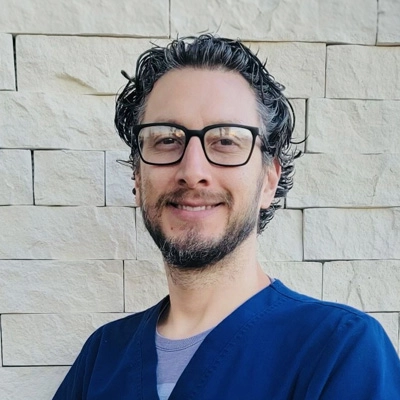

Meet the team
The chiropractors and nurse practitioners at our Waco office. Names, titles, and bios as they appear on the current Waco site.

R. Matthew George, D.C.
At our practice, we are committed to providing the highest quality medical and chiropractic care. If you have any questions or concerns, feel free to contact me directly at drgeorge@anthonychiro.com.
Dr. George earned his Bachelor of Science in Biology from Marshall University in West Virginia in 2006. He continued his education at Parker College of Chiropractic, where he earned a second bachelor's degree in Anatomy and his Doctorate in Chiropractic Care in 2010.
In 2012, Dr. George joined Anthony Medical & Chiropractic Center and has grown with the company ever since. Today, he serves as an owning provider and the Chief Executive Officer, dedicated to enhancing patient care and outcomes.
A passionate advocate for health and wellness, Dr. George enjoys staying active with trail running and participating in community races and events. He also finds joy in golfing with family and friends. In addition to chiropractic care, Dr. George has a strong interest in computer science and is committed to leveraging technology to improve healthcare delivery and patient well-being.
When he's not working, Dr. George is a proud family man who treasures quality time with his wife and two children, creating lasting memories together. Outside of work and family, he has a deep love for concerts and live music, always seeking the next opportunity to enjoy the vibrant energy of a great performance.

Dirk Lindley, D.C.
Dirk Bryce Lindley DC, BCCS was born and raised in Waco, Texas. He graduated from Midway High School in 2008 before leaving home for over ten years to further his education and gain invaluable working experience.
Initially, he moved to the west coast to attain a bachelors degree in Kinesiology and Sports Medicine from Pepperdine University in Malibu, California.
After graduating in 2012, he used this education to work under an osteopathic doctor and help develop a physical therapy program. He continued his education by pursuing a Doctorate of Chiropractic from Parker University in Dallas, Texas, which he obtained in 2017. While pursuing his doctorate, he also specialized in Functional Neurology and Functional Medicine. During this time, he became a board-certified cognitive specialist. He also obtained his board certification in childhood developmental disorders. He moved to Indianapolis, Indiana, and became the owner and operator of two Brain Balance Achievement Centers, using his expertise to help hundreds of families and children struggling with various developmental disorders. After moving back to Waco in 2020, he is excited to be close again to friends and family and to use his chiropractic degree to serve the community he has always considered home.
His hobbies mostly involve spending time outdoors, including hunting and fishing. He enjoys riding his bike and going to the gym to further on his own physical health and well-bein. He and his wife enjoy country music concerts, especially if there is a dance floor. When she is not with him, you will probably find his border collie, Zeke, in the passenger seat instead.
Britt Myers, D.C.
Dr. Britt Myers is a native of Temple and has been practicing in the greater Central Texas area for the past 21 years. Dr. Myers enjoys helping our patients recover from their injuries and resume living a healthier, higher quality life through chiropractic care.
Dr. Myers grew up in Temple and graduated from Temple High. From there, he attended and graduated from Texas Tech University in 1991 receiving a Bachelor Degree in Biology. In 2001, he graduated from Parker College of Chiropractic in Dallas receiving a Doctorate of Chiropractic.
Dr. Myers and his wife Sherly have been happily married for 17 years. They are blessed with two incredible children, ages 12 and 14. He and his family love the outdoors...hunting, skiing, camping, and the beach.
Dr. Myers and his family are very active in their church, First United Methodist in Woodway and in the community as well. He has served as a volunteer doctor at the Meyer Center in Waco and continues to support Mission Waco, a ministry to the homeless and less fortunate in the Waco area.

Matthew Grenda, D.C.
Dr. Matthew Grenda, D.C. is a Canadian chiropractor who earned his degree from Logan University in St. Louis, Missouri, in 2025. He is passionate about providing patient-centered, evidence-based care to improve health, mobility, and overall well-being.
With a strong foundation in chiropractic principles, Dr. Grenda remains committed to continuous learning and delivering compassionate, high-quality care.
He is proud to be part of the Anthony Medical & Chiropractic team, where he supports patients on their journey to optimal wellness and function.
Outside the clinic, Dr. Grenda enjoys staying active through sports, particularly golf, and practicing mixed martial arts.
Wesley Smith, D.C.
Dr. Wesley Smith is a dedicated Doctor of Chiropractic at Anthony Medical & Chiropractic Center. He earned his undergraduate degree from Ball State University in Muncie, Indiana, before completing his Doctor of Chiropractic degree at Logan University in Chesterfield, Missouri.
Passionate about patient-centered care, Dr. Smith believes in building meaningful relationships with his patients and helping them achieve their individual health and wellness goals. He is committed to creating a welcoming, supportive environment where every patient feels heard, valued, and confident in their care.
Outside of the clinic, Dr. Smith enjoys spending quality time with his wife and playing golf. He looks forward to serving his community, developing lasting patient relationships, and helping individuals take positive steps toward better health and overall well-being.
Marci Schwartz, MEd, MSN, APRN-FNP-C
In 2004, Marci graduated from Tarleton State University with a bachelor's degree in Exercise Sports Sciences and a master's degree in Education. Prior to becoming a nurse, she spent eight years working as an athletic trainer.
After graduating from Texas Tech University Health Sciences Center in 2012 with a Bachelor of Science in Nursing, Marci received her Master of Science in Nursing specializing in family nursing in 2017.
Throughout her career, Marci has acquired extensive knowledge in the fields of physical medicine and pain management. Using that knowledge, she helps control or minimize the pain of her patients. Her passion is educating patients about the mechanics of their bodies so they can live a life free from limitations.
Her hobbies include golfing, traveling, and spending time with her husband, children, and pets.

Paul Hodnett, NP-C
Paul Hodnett NP-C graduated from Texas A&M University with a Bachelor's of Science in Nursing in August 2020. With experience in Telemetry/Cardiology, he returned to school and graduated from Texas A&M Commerce with a Master's of Science in Nursing focusing on Family Nurse Practitioner in August, 2022.
Paul and his family moved from College Station, Texas, to Waco, Texas in May, 2023. With his wife and four children, Paul enjoys camping, hunting, and fishing. In addition to providing care to both our English and Spanish speaking communities, Paul is also a bilingual provider! Hablo Español!
The Waco site also lists massage therapists on this page. Individual massage therapist bios were not published in the page text, so they are not repeated here.
Call our Waco office
(254) 537-10645000 W Waco Dr, Waco, TX 76710. Free insurance verification. Se Habla Español.